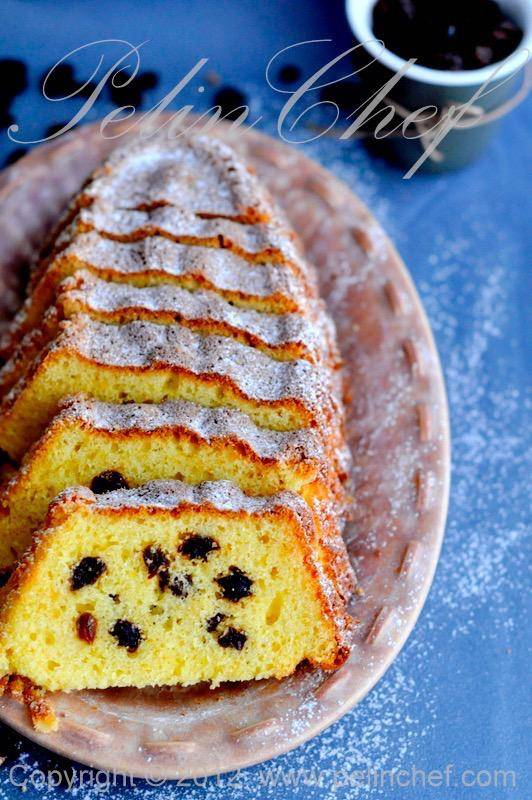

Üzümlü Kek Tarifi
Bugün vereceğim tarif, hepimizin bildiği, annelerimizin hemen ezberden tarifini verebileceği klasik bir Üzümlü Kek Tarifi. Yıllar geçtikçe yeni yeni kek tarifleri dener, öğrenir ve sever olduk. Ancak Üzümlü Kek Tarifi kadar iç ısıtan, mutlu eden, buram buram anne keki kokan bir başka kek tarifi olmadı. En azından benim için öyle. Küçükken annem kek yapacağım neli olsun diye sorduğunda ilk tercihim hep üzümlü olurdu. Neden kakaolu istemezmişim bilmiyorum. Annemin üzümlü keki çok güzel olurdu. Kuru üzümü sevmesem de keki yerken ağzıma gelen üzümleri çok severdim.
Ara ara aklıma geldiğinde ben de yapmaya çalışıyorum. Geçenlerde yaptığımda fotoğraflama fırsatını da yakalayınca yayınlamak istedim.Üzerinde üzüm deseni olan bu kalıbı da sırf bu kek için almıştım. Kalıp biraz küçük, normal boy kek kalıplarının yarısı kadar. Fotoğrafta gördüğünüz kalıp ölçüsünde iki adet kek elde ettim bu tarifle bilginize. Siz normal boy baton kalıp ya da klasik ortası delik (bundt) kalıp da kullanabilirsiniz.
Kaç Kişilik:4 Kişilik
Hazırlanma Süresi:30 Dakika
Pişirme Süresi:10 Dakika
Üzümlü Kek için Malzemeler
- 3 adet yumurta
- 1,5 su bardağı şeker
- 1 su bardağı süt
- 125 gr tereyağı ya da ⅔ su bardağı sıvıyağ
- 1 paket vanilya
- 1 adet limonun rendelenmiş kabuğu
- 1 tatlı kaşığı limon suyu
- 2,5 su bardağı un
- 1 paket kabartma tozu
- 1 su bardağı kuru üzüm
- Dilerseniz üzerine serpmek için pudra şekeri
Yapılışı:
- 1:Keki pişireceğiniz kalıbı tereyağı ya da margarin ile yağlayıp, hafifçe her tarafına un serpin.
- 2:Oda sıcaklığındaki tereyağını (ya da sıvıyağı) derin bir kasenin içine alın. Şekerle birlikte 2-3 dakika çırpın. Yumurtaları ekleyip 3-4 dakika daha çırpın. Vanilyayı, limon suyu ve kabuğunu ve sütü koyup 1 dakika daha çırpın.
- 3:Un ve kabartma tozunu bir kasenin içinde harmanlayın ve elekten geçirerek ilave edin. Unu karışıma yedirene kadar karıştırın ve hamurun 2/3'ünü keki pişireceğiniz kalıba dökün. Kuru üzümleri bir kaşık un ile karıştırın. Hamurun kalanına üzümleri ekleyin çok kısa karıştırıp diğer hamurun üzerine yayın. Kalıbın üzerini alüminyum folyo ile örtün.
- 4:Önceden ısıtılmış 180 derecedeki fırında 30 dakika pişirin. Folyoyu alıp 10-15 dakika daha pişirin. Kürdan batırarak pişme kontrolü yapın. Kürdan kuru çıkıyorsa pişmiş demektir.
- Kek ılınınca kalıptan çıkarın.

Afiyet Olsun...